神经网络只需要数字输入。因此，当我们有文本数据时，我们将它们转换成数字或向量表示，并将其提供给网络。有多种方法可以将输入文本转换成数字形式。比较流行的一些方法有词频-逆文档频 ( tf-idf )、包词(BOW) 等等。然而，这些方法不能捕捉单词的语义。这意味着这些方法不会理解单词的意思。
在这一章中，我们将学习一种叫做 word2vec 的算法，它将文本输入转换成一个有意义的向量。他们学习给定输入文本中每个单词的语义向量表示。我们将从了解word2vec模型和两种不同类型的word2vec模型开始，这两种模型称为连续词袋 ( CBOW )和跳格模型。接下来，我们将学习如何使用gensim库构建word2vec模型，以及如何在tensorboard中可视化高维单词嵌入。
接下来，我们将学习用于学习文档表示的 doc2vec 模型。我们会了解doc2vec中两种不同的方法叫做段向量- 分布式内存 模型 ( PV-DM )和段向量- 分布式包字 ( PV-DBOW )。我们还将看到如何使用doc2vec执行文档分类。在本章的最后，我们将学习用于学习句子表达的跳过思维算法和快速思维算法。
在本章中，我们将了解以下主题:
Word2vec是最流行和广泛使用的生成单词嵌入的模型之一。但是什么是单词嵌入呢？单词嵌入是单词在向量空间中的向量表示。word2vec模型生成的嵌入捕获单词的语法和语义含义。对单词进行有意义的矢量表示有助于神经网络更好地理解单词。
例如，让我们来看下面这篇课文:阿奇过去住在纽约，后来他搬到了圣克拉拉。他喜欢苹果和草莓。
Word2vec模型为前面文本中的每个单词生成向量表示。如果我们在嵌入空间中投影和可视化向量，我们可以看到所有相似的单词是如何紧密地绘制在一起的。如下图所示，单词苹果和草莓绘制在一起，单词纽约州和圣克拉拉绘制在一起。它们被绘制在一起是因为word2vec模型了解到苹果和草莓是相似的实体，即水果，而纽约和圣克拉拉是相似的实体，即城市，因此它们的向量(嵌入)彼此相似，这就是它们之间的距离较小的原因:
因此，使用word2vec模型，我们可以学习单词的有意义的向量表示，这有助于神经网络理解单词是关于什么的。对一个单词有一个好的表示在各种任务中都是有用的。由于我们的网络可以理解单词的上下文和句法含义，这将扩展到各种用例，如文本摘要、情感分析、文本生成等。
好吧。但是word2vec模型是如何学习单词嵌入的呢？有两种学习单词嵌入的word2vec模型:
我们将深入细节，了解这些模型是如何学习单词的矢量表示的。
假设我们有一个神经网络，它有一个输入层、一个隐藏层和一个输出层。网络的目标是根据一个词周围的词来预测这个词。我们试图预测的单词被称为目标单词，围绕目标单词的单词被称为上下文单词。
我们用多少上下文单词来预测目标单词？我们使用大小为的窗口来选择上下文单词。如果窗口大小是2，那么我们使用目标单词之前的两个单词和之后的两个单词作为上下文单词。
我们来考虑一下句子，太阳从东方升起以升起这个词为目标词。如果我们将窗口大小设置为2，那么我们将前面的两个词、和、、中的和目标词上升到之后的两个词、作为上下文词，如下图所示:
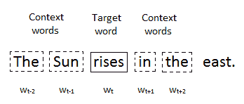
因此，网络的输入是上下文单词，输出是目标单词。我们如何将这些输入馈入网络？神经网络只接受数字输入，所以我们不能将原始的上下文单词直接作为网络的输入。因此，我们使用one-hot编码技术将给定句子中的所有单词转换成数字形式，如下图所示:
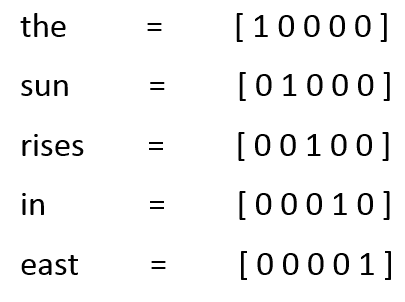
下图显示了CBOW模型的体系结构。如您所见，我们将上下文单词、、、孙、in、T22和T24作为输入输入到网络中，它预测目标单词将上升为输出:
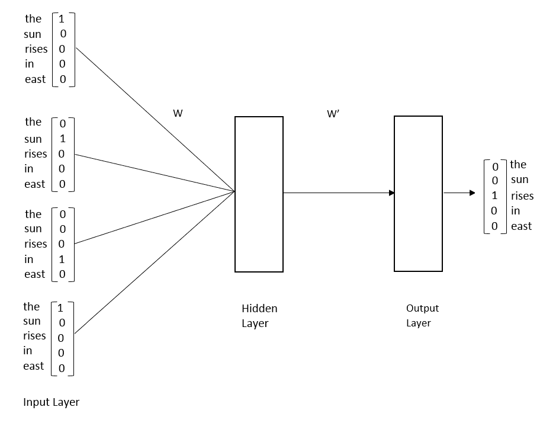
在初始迭代中，网络不能正确预测目标单词。但是经过一系列的迭代，它学会了使用梯度下降来预测正确的目标单词。使用梯度下降，我们更新网络的权重，并找到可以预测正确目标词的最佳权重。
由于我们有一个输入层、一个隐藏层和一个输出层，如上图所示，我们将有两个权重:


在训练过程中，网络将试图找到这两组权重的最佳值，以便它可以预测正确的目标单词。
原来，输入到隐藏层之间的最佳权重形成了单词的向量表示。它们基本上构成了单词的语义。因此，在训练之后，我们简单地移除输出层，取输入层和隐藏层之间的权重，并将它们分配给相应的单词。
训练之后，如果我们看一下矩阵，它代表了每个单词的嵌入。所以，孙的嵌入为[0.0，0.3，0.3，0.6，0.1 ]:
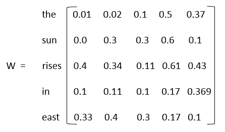
因此，CBOW模型学习用给定的上下文单词来预测目标单词。它学习使用梯度下降来预测正确的目标单词。在训练过程中，它通过梯度下降来更新网络的权重，并找到可以预测正确目标词的最佳权重。输入层和隐藏层之间的最佳权重形成了单词的矢量表示。因此，在训练之后，我们简单地取输入层和隐藏层之间的权重，并将它们作为向量分配给相应的单词。
现在我们已经对CBOW模型有了直观的理解，我们将进入细节并从数学上学习如何精确地计算单词嵌入。
我们了解到，输入层和隐藏层之间的权重基本上构成了单词的矢量表示。但是CBOW模型到底是如何预测目标词的呢？它如何使用反向传播来学习最佳权重？让我们在下一节看看这个。
我们了解到，在CBOW模型中，我们试图预测给定上下文单词的目标单词，因此它将一些 数量的上下文单词作为输入，并返回一个目标单词作为输出。在只有一个上下文词的CBOW模型中，我们将只有一个上下文词，即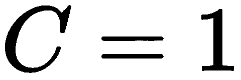。因此，网络只接受一个上下文单词作为输入，并返回一个目标单词作为输出。
数量的上下文单词作为输入，并返回一个目标单词作为输出。在只有一个上下文词的CBOW模型中，我们将只有一个上下文词，即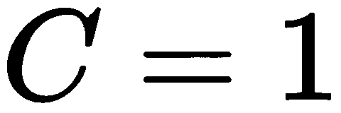。因此，网络只接受一个上下文单词作为输入，并返回一个目标单词作为输出。
在继续之前，首先让我们熟悉一下符号。我们语料库中所有的独特词汇被称为词汇。考虑到我们在理解CBOW模型部分看到的例子，我们在句子中有五个独特的词——the、孙、 rises 、中的和 east 。这五个词是我们的词汇。
设 表示词汇量的大小(即字数)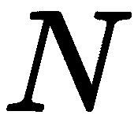表示隐含层神经元的数量。我们了解到我们有一个输入层、一个隐藏层和一个输出层:
表示词汇量的大小(即字数)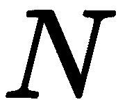表示隐含层神经元的数量。我们了解到我们有一个输入层、一个隐藏层和一个输出层:
 表示。当我们说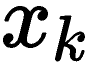时，代表的是词汇表中的
表示。当我们说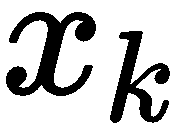时，代表的是词汇表中的 输入词。
输入词。 时，它代表隐藏层中的
时，它代表隐藏层中的 神经元。
神经元。 表示。当我们说
表示。当我们说 时，它代表词汇表中的
时，它代表词汇表中的 输出单词。
输出单词。输入到隐层权重 的维度是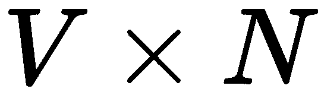(也就是我们的词汇量的大小x隐层神经元的数量)隐藏到输出层权重的维度
的维度是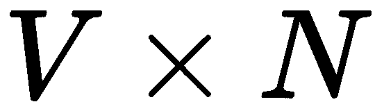(也就是我们的词汇量的大小x隐层神经元的数量)隐藏到输出层权重的维度 是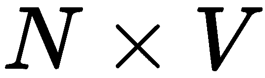(也就是隐层神经元的数量x词汇量的)。矩阵元素的表示如下:
是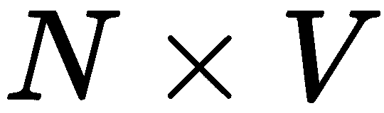(也就是隐层神经元的数量x词汇量的)。矩阵元素的表示如下:
 和隐藏层节点
和隐藏层节点 之间矩阵中的一个元素
之间矩阵中的一个元素 和输出层的节点
和输出层的节点 之间的矩阵中的元素
之间的矩阵中的元素下图将有助于我们清楚地理解符号:
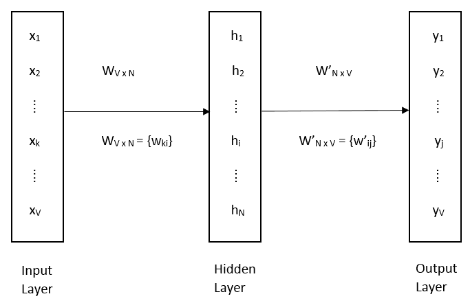
为了预测给定上下文单词的目标单词，我们需要执行前向传播。
首先，我们将输入 乘以隐藏层权重的输入
乘以隐藏层权重的输入 :
:

我们知道每个输入字都是一位热编码的，所以当我们将 乘以
乘以 时，我们基本上获得了
时，我们基本上获得了 到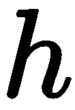的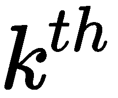行。所以，我们可以直接写为:
到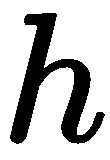的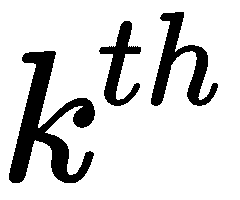行。所以，我们可以直接写为:
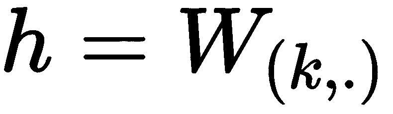
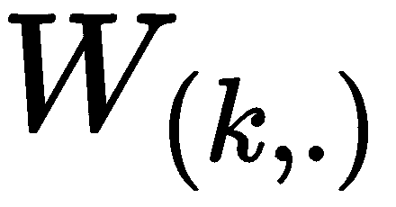基本上暗示了输入单词的矢量表示。让我们用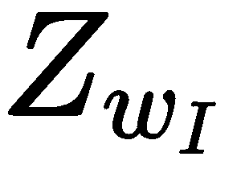来表示输入单词 的向量表示。因此，前面的等式可以写成如下形式:
的向量表示。因此，前面的等式可以写成如下形式:

现在我们在隐藏层 ，我们有另一组权重，隐藏输出层权重
，我们有另一组权重，隐藏输出层权重 。我们知道我们的词汇表中有
。我们知道我们的词汇表中有 个单词，我们需要计算词汇表中每个单词成为目标单词的概率。
个单词，我们需要计算词汇表中每个单词成为目标单词的概率。
让 表示我们的词汇表中的
表示我们的词汇表中的 单词作为目标单词的分数。分数
单词作为目标单词的分数。分数 通过将隐藏层的值
通过将隐藏层的值 和隐藏到输出层的权重
和隐藏到输出层的权重 相乘来计算。由于我们正在计算单词
相乘来计算。由于我们正在计算单词 的分数，我们将隐藏层乘以矩阵的列
的分数，我们将隐藏层乘以矩阵的列 :
:
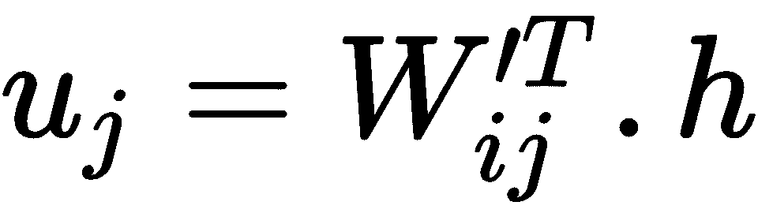
权重矩阵的列基本上表示单词的向量表示。让我们用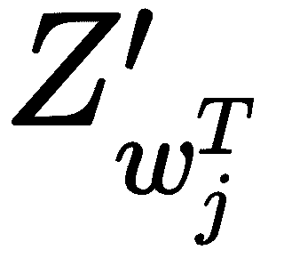来表示 单词的矢量表示。因此，前面的等式可以写成如下形式:
单词的矢量表示。因此，前面的等式可以写成如下形式:
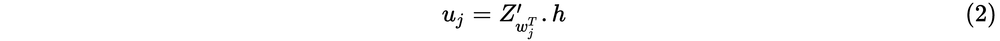
将方程 (1) 代入方程 (2) ，我们可以写出如下:

你能推断出前面的等式想要表达什么吗？我们基本上是在计算输入上下文单词表示 和我们的词汇表中的
和我们的词汇表中的 单词表示之间的点积。
单词表示之间的点积。
计算任意两个向量之间的点积有助于我们理解它们有多相似。因此，计算 和之间的点积可以告诉我们词汇表中的
和之间的点积可以告诉我们词汇表中的 单词与输入的上下文单词有多相似。因此，当词汇表中的单词
单词与输入的上下文单词有多相似。因此，当词汇表中的单词 的得分高时，则意味着单词
的得分高时，则意味着单词 与给定的输入单词相似，并且它是目标单词。类似地，当词汇表
与给定的输入单词相似，并且它是目标单词。类似地，当词汇表 中的单词的分数低时，则意味着单词
中的单词的分数低时，则意味着单词 与给定的输入单词不相似，并且它不是目标单词。
与给定的输入单词不相似，并且它不是目标单词。
因此， 基本上给出了作为目标单词的单词
基本上给出了作为目标单词的单词 的分数。但是我们没有将作为原始分数，而是将它们转换成概率。我们知道softmax函数压缩0到1之间的值，所以我们可以使用softmax函数将转换成概率。
的分数。但是我们没有将作为原始分数，而是将它们转换成概率。我们知道softmax函数压缩0到1之间的值，所以我们可以使用softmax函数将转换成概率。
我们可以将输出编写如下:
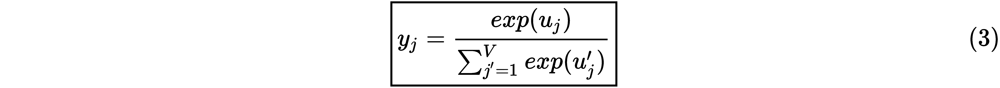
这里，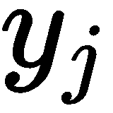告诉我们在给定输入上下文单词的情况下，单词 相对于目标单词的概率。我们计算词汇表中所有单词的概率，并选择概率最高的单词作为目标单词。
相对于目标单词的概率。我们计算词汇表中所有单词的概率，并选择概率最高的单词作为目标单词。
好的，我们的目标函数是什么？也就是说，我们如何计算损失？
我们的目标是找到正确的目标词。设 表示正确目标词的概率。所以，我们需要最大化这个概率:
表示正确目标词的概率。所以，我们需要最大化这个概率:

我们不是最大化原始概率，而是最大化对数概率:
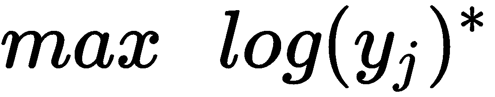
但是为什么我们要最大化对数概率而不是原始概率呢？因为机器在表示分数的浮点方面有局限性，当我们乘以许多概率时，它会导致一个无限小的值。因此，为了避免这种情况，我们使用对数概率，这将确保数值的稳定性。
现在我们有了一个最大化目标，我们需要将其转换为最小化目标，这样我们就可以应用我们最喜欢的梯度下降算法来最小化目标函数。怎样才能把我们的最大化目标变成最小化目标？我们可以通过简单地加上负号来实现。所以我们的目标函数变成如下:

损失函数可由下式给出:

将方程 (3) 代入方程 (4) ，我们得到如下结果:
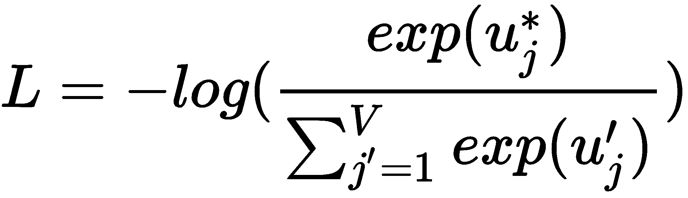
根据对数商法则， log(a/b) = log(a) - log(b) ，我们可以将前面的等式改写如下:
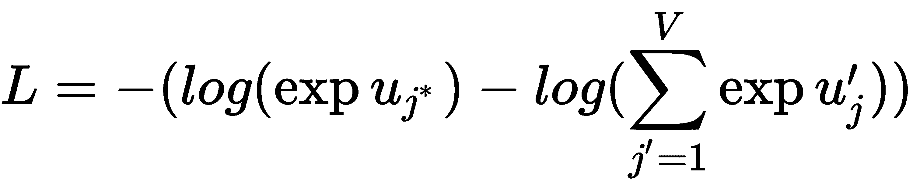

我们知道 log 和 exp 相互抵消，所以我们可以在第一项中取消 log 和 exp ，我们最终的损失函数变成如下:

我们使用梯度下降算法最小化损失函数。因此，我们反向传播网络，计算损失函数相对于权重的梯度，并更新权重。我们有两组权重，输入到隐藏层权重 和隐藏到输出层权重
和隐藏到输出层权重 。我们计算关于这两个权重的损失梯度，并根据权重更新规则更新它们:
。我们计算关于这两个权重的损失梯度，并根据权重更新规则更新它们:

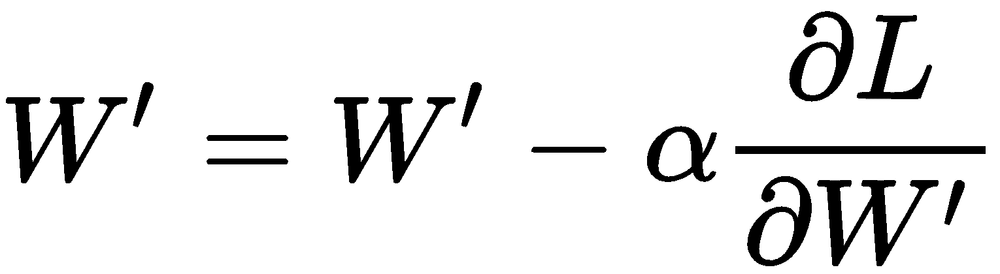
为了更好地理解反向传播，让我们回忆一下正向传播中涉及的步骤:


首先，我们计算相对于隐藏到输出层 的损失梯度。我们不能直接从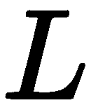计算
的损失梯度。我们不能直接从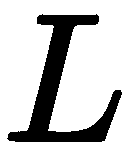计算 相对于的损失梯度，因为损失函数中没有项，所以我们应用链式法则如下:
相对于的损失梯度，因为损失函数中没有项，所以我们应用链式法则如下:
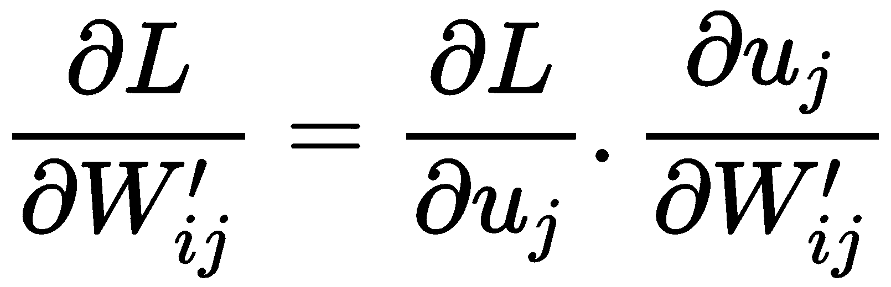
请参考向前传播的方程式来理解导数是如何计算的。
第一项的导数如下:
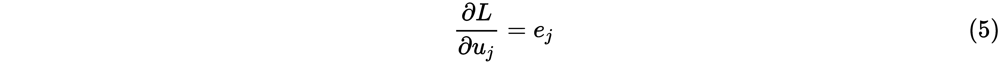
这里，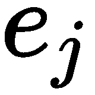是误差项，是实际字和预测字之差。
现在，我们将计算第二项的导数。
既然我们知道:

因此，相对于 的损耗梯度为:
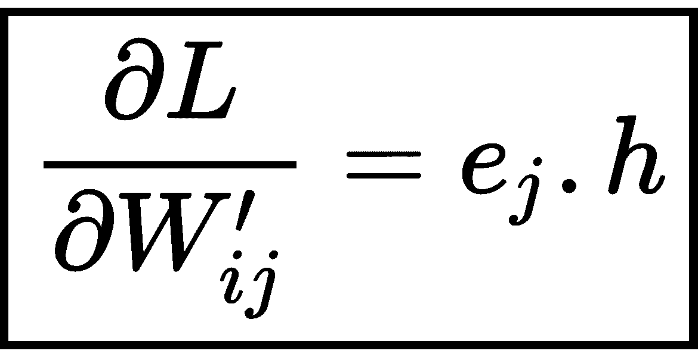
现在，我们计算相对于隐藏层权重 的输入的梯度。我们不能直接从
的输入的梯度。我们不能直接从 计算导数，因为中没有
计算导数，因为中没有 项，所以我们应用链式法则如下:
项，所以我们应用链式法则如下:

为了计算上式中第一项的导数，我们再次应用链式法则，因为我们不能直接从 计算
计算 相对于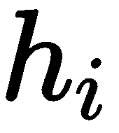的导数:
相对于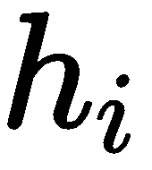的导数:

从方程 (5) ，我们可以写出:

因为我们知道:
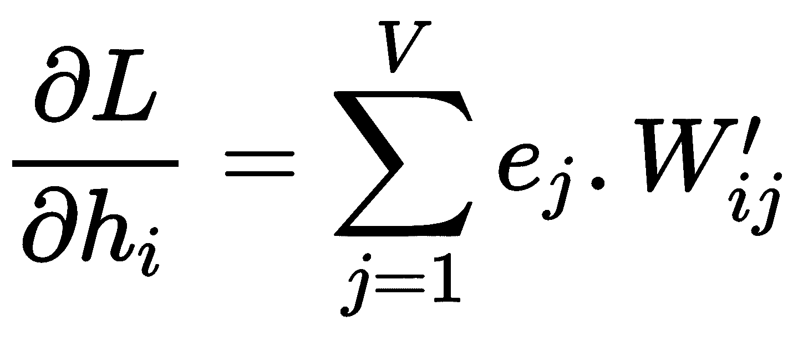
除了求和，我们可以写:
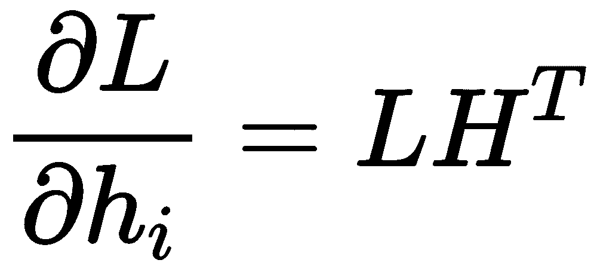
 表示词汇表中所有单词的输出向量之和，用它们的预测误差加权。
表示词汇表中所有单词的输出向量之和，用它们的预测误差加权。
现在让我们计算第二项的导数。
从我们认识开始，:
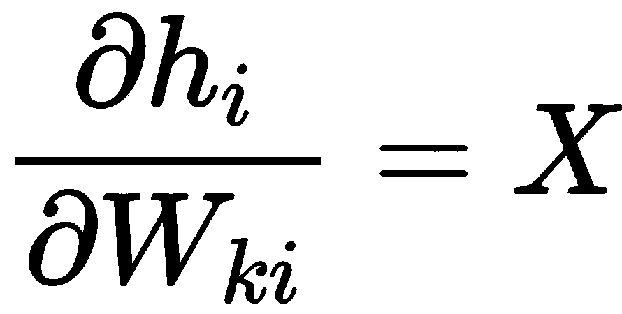
因此，损耗梯度相对于 的给出为:

因此，我们的权重更新等式变成如下:

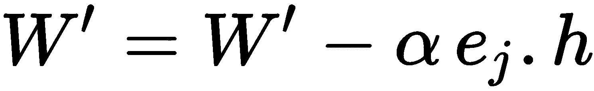
我们使用前面的等式更新网络的权重，并在训练期间获得最佳权重。隐藏层权重的最佳输入 ，成为我们词汇表中单词的向量表示。
，成为我们词汇表中单词的向量表示。
Single_context_CBOW的Python代码如下:
def Single_context_CBOW(x, label, W1, W2, loss):
#forward propagation
h = np.dot(W1.T, x)
u = np.dot(W2.T, h)
y_pred = softmax(u)
#error
e = -label + y_pred
#backward propagation
dW2 = np.outer(h, e)
dW1 = np.outer(x, np.dot(W2.T, e))
#update weights
W1 = W1 - lr * dW1
W2 = W2 - lr * dW2
#loss function
loss += -float(u[label == 1]) + np.log(np.sum(np.exp(u)))
return W1, W2, loss
现在我们已经了解了CBOW模型如何使用单个单词作为上下文，我们将了解当您使用多个单词作为上下文单词时它将如何工作。以多个输入单词作为上下文的CBOW的架构如下图所示:
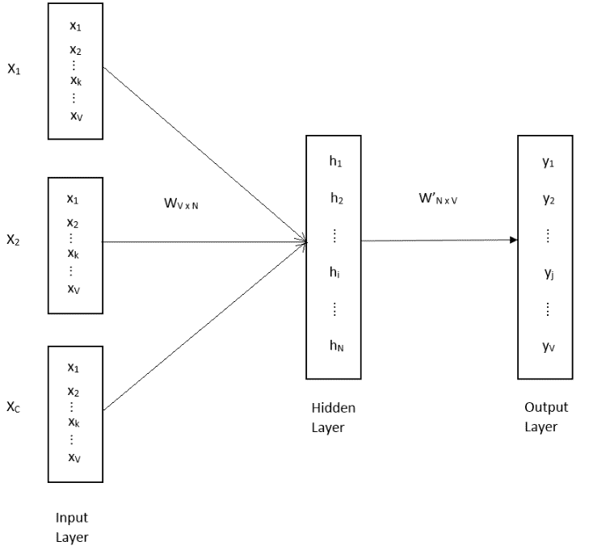
作为上下文的多个单词和作为上下文的单个单词之间没有太大区别。不同之处在于，对于作为输入的多个上下文单词，我们取所有输入上下文单词的平均值。也就是说，作为第一步，我们向前传播网络，并通过将输入 与权重
与权重 相乘来计算
相乘来计算 的值，正如我们在使用单个上下文单词的 CBOW一节中看到的:
的值，正如我们在使用单个上下文单词的 CBOW一节中看到的:

但是，在这里，由于我们有多个上下文单词，我们将有多个输入(即 )，其中
)，其中 是上下文单词的数量，我们简单地取它们的平均值并乘以权重矩阵，如下所示:
是上下文单词的数量，我们简单地取它们的平均值并乘以权重矩阵，如下所示:
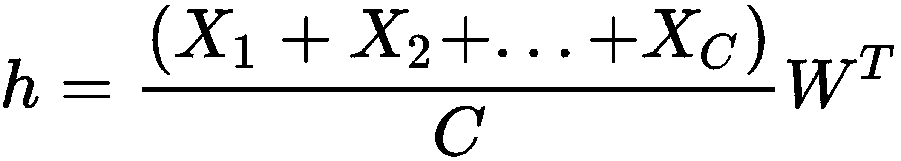

类似于我们在 CBOW和单个上下文单词章节中所学的，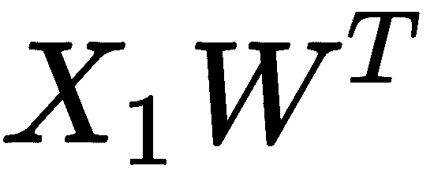代表输入上下文单词 的向量表示。
的向量表示。 代表输入单词
代表输入单词 的矢量表示，以此类推。
的矢量表示，以此类推。
我们用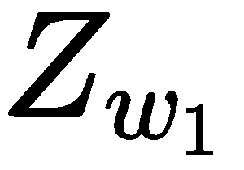表示输入上下文单词，用 表示输入上下文单词，以此类推。因此，我们可以将前面的等式改写为:
表示输入上下文单词，以此类推。因此，我们可以将前面的等式改写为:
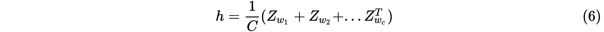
这里， 代表上下文字数。
代表上下文字数。
计算 的值与我们在上一节看到的相同:
的值与我们在上一节看到的相同:
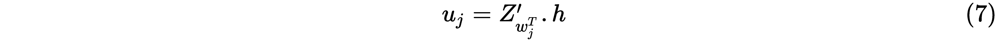
这里， 表示词汇表中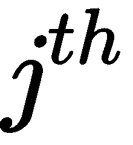单词的向量表示。
表示词汇表中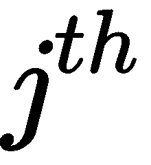单词的向量表示。
将方程 (6) 代入方程【7】，我们写出如下:
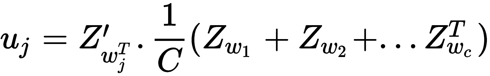
前面的等式给出了词汇表中的单词和给定输入上下文单词的平均表示之间的相似性。
损失函数与我们在单个单词上下文中看到的相同，它被给出为:
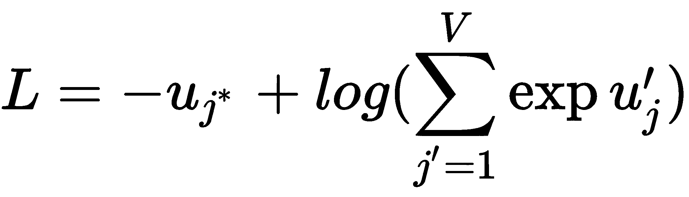
现在，反向传播有一个小的不同。我们知道，在反向传播中，我们计算梯度并根据权重更新规则更新我们的权重。回想一下，在上一节中，我们是这样更新权重的:
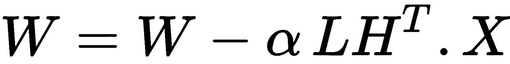

因为在这里，我们有多个上下文单词作为输入，所以在计算 时，我们取上下文单词的平均值:
时，我们取上下文单词的平均值:
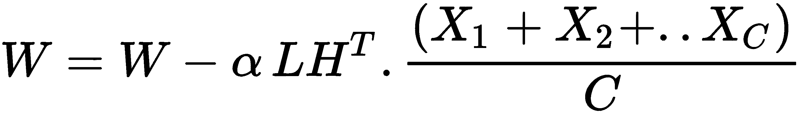
计算 与我们在上一节看到的一样:
与我们在上一节看到的一样:

因此，简而言之，在多单词上下文中，我们只需取多个上下文输入单词的平均值，并像在CBOW的单个单词上下文中一样构建模型。
现在，让我们看看word2vec模型的另一个有趣的类型，称为skip-gram。Skip-gram正好是CBOW模型的反向。也就是说，在跳格模型中，我们试图在给定目标单词作为输入的情况下预测上下文单词。如下图所示，我们可以注意到，当上升时我们有了目标单词，我们需要预测上下文单词 the、中的sun和 the :
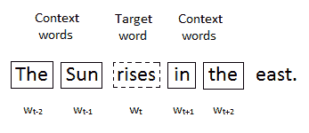
类似于CBOW模型，我们使用窗口大小来确定我们需要预测多少上下文单词。跳跃图模型的体系结构如下图所示。
我们可以看到，它将单个目标单词作为输入，并尝试预测多个上下文单词:

在跳格模型中，我们试图根据目标词来预测上下文词。所以，它将一个目标单词作为输入，返回 上下文单词作为输出，如上图所示。因此，在训练skip-gram模型来预测上下文单词之后，我们对隐藏层
上下文单词作为输出，如上图所示。因此，在训练skip-gram模型来预测上下文单词之后，我们对隐藏层 的输入之间的权重变成了单词的向量表示，就像我们在CBOW模型中看到的那样。
的输入之间的权重变成了单词的向量表示，就像我们在CBOW模型中看到的那样。
现在我们对跳格模型有了一个基本的了解，让我们深入细节，了解它们是如何工作的。
首先，我们将了解向前传播在跳格模型中是如何工作的。让我们使用CBOW模型中使用的相同符号。跳跃图模型的体系结构如下图所示。如您所见，我们只输入一个目标单词 ，它返回
，它返回 上下文单词作为输出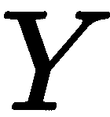:
上下文单词作为输出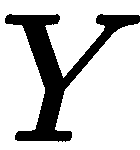:
类似于我们在CBOW中看到的，在正向传播部分，首先我们将输入 乘以隐藏层权重的输入
乘以隐藏层权重的输入 :
:

我们可以直接将前面的等式改写为:
这里， 意味着输入单词
意味着输入单词 的矢量表示。
的矢量表示。
接下来，我们计算 ，这意味着我们的词汇表中的单词
，这意味着我们的词汇表中的单词 和输入的目标单词之间的相似性得分。类似于我们在CBOW模型中看到的，可以给出为:
和输入的目标单词之间的相似性得分。类似于我们在CBOW模型中看到的，可以给出为:

我们可以直接将上面的等式改写为:
这里， 暗示了单词
暗示了单词 的向量表示。
的向量表示。
但是，与CBOW模型不同，我们只预测了一个目标单词，这里我们预测了 个上下文单词。因此，我们可以将上面的等式改写为:
个上下文单词。因此，我们可以将上面的等式改写为:
因此，意味着词汇表中的 单词的分数是上下文单词
单词的分数是上下文单词 。那就是:
。那就是:
 的分数是第一个上下文单词
的分数是第一个上下文单词 的分数是第二上下文单词
的分数是第二上下文单词 的分数是第三个上下文单词
的分数是第三个上下文单词由于我们想将分数转换成概率，我们应用softmax函数并计算 :
:
这里，意味着词汇表中的单词成为上下文单词 的概率。
的概率。
现在，让我们看看如何计算损失函数。让表示正确上下文单词的概率。所以，我们需要最大化这个概率:
不是最大化原始概率，而是最大化对数概率:
类似于我们在CBOW模型中看到的，我们通过添加负号将其转化为最小化目标函数:
将等式 (8) 代入前面的等式，我们可以写出如下:
因为我们有 上下文单词，我们取概率的乘积和为:
上下文单词，我们取概率的乘积和为:
因此，根据对数规则，我们可以改写上述方程，我们的最终损失函数变成:
看看CBOW和skip-gram模型的损失函数。你会注意到CBOW损失函数和skip-gram损失函数之间的唯一区别是添加了上下文单词 。
。
我们使用梯度下降算法最小化损失函数。因此，我们反向传播网络，计算损失函数相对于权重的梯度，并根据权重更新规则更新权重。
首先，我们计算相对于隐藏到输出层的损失梯度 。我们不能直接从
。我们不能直接从 计算损失相对于的导数，因为其中没有项，所以我们应用如下所示的链式法则。这与我们在CBOW模型中看到的基本相同，只是这里我们总结了所有上下文单词:
计算损失相对于的导数，因为其中没有项，所以我们应用如下所示的链式法则。这与我们在CBOW模型中看到的基本相同，只是这里我们总结了所有上下文单词:
首先，让我们计算第一项:
我们知道是误差项，是实际单词和预测单词的差。为了符号简单，我们可以将所有上下文单词的总和写成:

所以，我们可以说:

现在，让我们计算第二项。既然我们知道 ，我们可以写:
，我们可以写:

因此，相对于 的损耗梯度
的损耗梯度 给出如下:
给出如下:

现在，我们计算相对于隐藏层权重 输入的损失梯度。这很简单，与我们在CBOW模型中看到的完全相同:
输入的损失梯度。这很简单，与我们在CBOW模型中看到的完全相同:

因此，相对于 的损耗梯度为:
在计算梯度之后，我们将我们的权重 W 和W’更新为:

因此，在训练网络时，我们使用前面的等式更新网络的权重，并获得最佳权重。输入到隐藏层之间的最佳权重， 成为我们词汇表中单词的向量表示。
成为我们词汇表中单词的向量表示。
现在，我们将看看不同的训练策略，它们可以优化和提高我们的word2vec模型的效率。
在CBOW和skip-gram模型中，我们使用softmax函数来计算单词出现的概率。但是使用softmax函数计算概率在计算上是昂贵的。比方说，我们正在建立一个CBOW模型；我们将词汇表中的 单词作为目标单词的概率计算如下:
单词作为目标单词的概率计算如下:
如果你看看前面的等式，我们基本上是用词汇表中所有单词的指数来驱动的指数。我们的复杂度是 ，其中
，其中 是词汇量。当我们用包含数百万个单词的词汇表来训练word2vec模型时，它的计算开销肯定会很大。因此，为了解决这个问题，我们不使用softmax函数，而是使用分层的softmax函数。
是词汇量。当我们用包含数百万个单词的词汇表来训练word2vec模型时，它的计算开销肯定会很大。因此，为了解决这个问题，我们不使用softmax函数，而是使用分层的softmax函数。
分层的softmax函数使用霍夫曼二叉查找树，并将复杂度显著降低到 。如下图所示，在分层softmax中，我们将输出图层替换为二叉查找树:
。如下图所示，在分层softmax中，我们将输出图层替换为二叉查找树:
树中的每个叶节点代表词汇表中的一个单词，所有中间节点代表其子节点的相对概率。
给定一个上下文单词，我们如何计算目标单词的概率？我们简单地通过决定左转还是右转来遍历树。如下图所示，在给定某个上下文单词 的情况下，单词飞到成为目标单词的概率被计算为沿着路径的概率的乘积:
的情况下，单词飞到成为目标单词的概率被计算为沿着路径的概率的乘积:

目标词的概率如下所示:
但是我们如何计算这些概率呢？每个节点 都有一个关联的嵌入(比如说，)。为了计算节点的概率，我们将节点的嵌入值与隐藏层值
都有一个关联的嵌入(比如说，)。为了计算节点的概率，我们将节点的嵌入值与隐藏层值 相乘，并应用sigmoid函数。例如，给定上下文单词
相乘，并应用sigmoid函数。例如，给定上下文单词 ，节点
，节点 取得权利的概率计算如下:
取得权利的概率计算如下:
一旦我们计算了右转的概率，我们就可以通过简单地从1中减去右转的概率来计算左转的概率。

如果我们将所有叶节点的概率相加，那么它等于1，意味着我们的树已经被规范化，为了找到一个单词的概率，我们只需要评估个节点。
假设我们正在构建一个CBOW模型，我们有一个句子鸟儿在天空飞翔。设语境词为鸟，为，中的，中的和目标词为飞翔。
每当网络预测到不正确的目标单词时，我们都需要更新网络的权重。所以，除了单词飞，如果一个不同的单词被预测为目标单词，那么我们更新网络。
但这只是一小部分词汇。考虑一下我们的词汇表中有数百万个单词的情况。在这种情况下，我们需要执行多次权重更新，直到网络预测到正确的目标词。这既费时又不是一个有效的方法。因此，我们没有这样做，而是将正确的目标单词标记为正面类别，并从词汇表中抽取一些单词，将其标记为负面类别。
我们在这里所做的基本上是将我们的多项式类问题转换为二元分类问题(即，模型不是试图预测目标词，而是对给定词是否是目标词进行分类)。
该单词被选为负样本的概率被给出为:
在我们的语料库中，会有某些词出现的频率非常高，比如中的、就是等等，也有某些词出现的频率很低。为了在这两者之间保持平衡，我们使用了二次采样技术。所以，我们以概率 去除出现频率超过某个阈值的词，可以表示为:
去除出现频率超过某个阈值的词，可以表示为:
这里， 是阈值，是单词
是阈值，是单词 的频率。
的频率。
现在我们已经了解了word2vec模型的工作原理，让我们看看如何使用gensim库构建word2vec模型。Gensim是广泛用于构建向量空间模型的流行科学软件包之一。可以通过pip安装。所以，我们可以在终端中输入下面的命令来安装gensim库:
pip install -U gensim
现在我们已经安装了gensim，我们将看到如何使用它来构建word2vec模型。你可以从GitHub的http://bit.ly/2Xjndj4下载本节使用的数据集以及完整的代码和一步一步的解释。
首先，我们将导入必要的库:
加载数据集
import warnings
warnings.filterwarnings(action='ignore')
#data processing
import pandas as pd
import re
from nltk.corpus import stopwords
stopWords = stopwords.words('english')
#modelling
from gensim.models import Word2Vec
from gensim.models import Phrases
from gensim.models.phrases import Phraser
让我们看看我们从数据中得到了什么:
data = pd.read_csv('data/text.csv',header=None)
上述代码生成以下输出:
data.head()
预处理和准备数据集
通过运行以下代码，我们可以看到预处理文本的样子:
def pre_process(text):
# convert to lowercase
text = str(text).lower()
# remove all special characters and keep only alpha numeric characters and spaces
text = re.sub(r'[^A-Za-z0-9\s.]',r'',text)
#remove new lines
text = re.sub(r'\n',r' ',text)
# remove stop words
text = " ".join([word for word in text.split() if word not in stopWords])
return text
我们得到的输出为:
pre_process(data[0][50])
预处理整个数据集:
'agree fancy. everything needed. breakfast pool hot tub nice shuttle airport later checkout time. noise issue tough sleep through. awhile forget noisy door nearby noisy guests. complained management later email credit compd us amount requested would return.'
genism库需要列表形式的输入:
data[0] = data[0].map(lambda x: pre_process(x))
text = [ [word1, word2, word3], [word1, word2, word3] ]
我们知道数据中的每一行都包含一组句子。所以，我们用'.'把它们分开，并把它们转换成一个列表:
上述代码生成以下输出:
data[0][1].split('.')[:5]
The preceding code generates the following output:
['stayed crown plaza april april ', ' staff friendly attentive', ' elevators tiny ', ' food restaurant delicious priced little high side', ' course washington dc']
因此，如图所示，现在，我们有一个列表中的数据。但是我们需要将它们转换成列表的列表。所以，现在我们再用一个空格' '把它分开。也就是说，首先，我们用'.'分割数据，然后我们用' '分割它们，这样我们就可以在一个列表列表中得到我们的数据:
您可以看到，我们以列表的形式输入内容:
corpus = []
for line in data[0][1].split('.'):
words = [x for x in line.split()]
corpus.append(words)
将数据集中的整个文本转换为列表列表:
corpus[:2]
[['stayed', 'crown', 'plaza', 'april', 'april'], ['staff', 'friendly', 'attentive']]
如图所示，我们成功地将数据集中的整个文本转换为一个列表列表:
data = data[0].map(lambda x: x.split('.'))
corpus = []
for i in (range(len(data))):
for line in data[i]:
words = [x for x in line.split()]
corpus.append(words)
print corpus[:2]
现在，我们的问题是，我们的语料库只包含一元词，当我们输入一个二元词时，它不会给出结果，例如， san francisco 。
[['room', 'kind', 'clean', 'strong', 'smell', 'dogs'],
['generally', 'average', 'ok', 'overnight', 'stay', 'youre', 'fussy']]
所以我们使用gensim的Phrases函数，它收集所有一起出现的单词，并在它们之间添加一个下划线。所以，现在旧金山变成了旧金山。
So we use gensim's Phrases functions, which collects all the words that occur together and adds an underscore between them. So, now san francisco becomes san_francisco.
我们将min_count参数设置为25，这意味着我们忽略所有出现在min_count后面的单词和二元模型:
如你所见，现在，在我们的语料库中，一个下划线被添加到了二元模型中:
phrases = Phrases(sentences=corpus,min_count=25,threshold=50)
bigram = Phraser(phrases)
for index,sentence in enumerate(corpus):
corpus[index] = bigram[sentence]
我们从语料库中再检查一个值，看看如何为二元模型添加下划线:
corpus[111]
[u'connected', u'rivercenter', u'mall', u'downtown', u'san_antonio']
构建模型
corpus[9]
[u'course', u'washington_dc']
size参数表示向量的大小，也就是我们向量的维数，来表示一个单词。大小可以根据我们的数据大小来选择。如果我们的数据非常小，那么我们可以将大小设置为一个小值，但是如果我们有一个非常大的数据集，那么我们可以将大小设置为300。在我们的例子中，我们将大小设置为100。
使用以下代码定义所有超参数:
让我们使用gensim的Word2Vec函数来训练模型:
size = 100
window_size = 2
epochs = 100
min_count = 2
workers = 4
sg = 1
一旦我们成功地训练了模型，我们就拯救它们。保存和加载模型非常简单；我们可以简单地分别使用save和load函数:
model = Word2Vec(corpus, sg=1,window=window_size,size=size, min_count=min_count,workers=workers,iter=epochs)
我们还可以通过使用以下代码load已经保存的Word2Vec模型:
model.save('model/word2vec.model')
评估嵌入
model = Word2Vec.load('model/word2vec.model')
正如您在下面的代码中看到的，给定san_diego作为输入，我们得到所有其他最相似的相关城市名称:
As you can see in the following code, given san_diego as an input, we are getting all the other related city names that are most similar:
model.most_similar('san_diego')
[(u'san_antonio', 0.8147615790367126),
(u'indianapolis', 0.7657858729362488),
(u'austin', 0.7620342969894409),
(u'memphis', 0.7541092038154602),
(u'phoenix', 0.7481759786605835),
(u'seattle', 0.7471771240234375),
(u'dallas', 0.7407466769218445),
(u'san_francisco', 0.7373261451721191),
(u'la', 0.7354192137718201),
(u'boston', 0.7213659286499023)]
我们还可以对向量进行算术运算，以检查向量的精确度，如下所示:
我们还可以在给定的单词集中找到不匹配的单词；例如，在下面名为text的列表中，除了单词holiday，其他都是城市名。因为Word2Vec已经理解了这种差异，所以它返回与列表中其他单词不匹配的单词holiday,如下所示:
model.most_similar(positive=['woman', 'king'], negative=['man'], topn=1)
[(u'queen', 0.7255150675773621)]
TensorBoard中单词嵌入的可视化
text = ['los_angeles','indianapolis', 'holiday', 'san_antonio','new_york']
model.doesnt_match(text)
'holiday'
导入所需的库:
Import the required libraries:
import warnings warnings.filterwarnings(action='ignore')
import tensorflow as tf
from tensorflow.contrib.tensorboard.plugins import projector tf.logging.set_verbosity(tf.logging.ERROR)
import numpy as np
import gensim
import os
加载保存的模型:
加载模型后，我们将把模型中的字数保存到max_size变量中:
file_name = "model/word2vec.model"
model = gensim.models.keyedvectors.KeyedVectors.load(file_name)
我们知道单词向量的维数会是 。因此，我们初始化一个名为w2v的矩阵，将形状作为我们的max_size，这是词汇表的大小，也是模型的第一层大小，这是隐藏层中神经元的数量:
。因此，我们初始化一个名为w2v的矩阵，将形状作为我们的max_size，这是词汇表的大小，也是模型的第一层大小，这是隐藏层中神经元的数量:
max_size = len(model.wv.vocab)-1
现在，我们创建一个名为metadata.tsv的新文件，其中保存了模型中的所有单词，并将每个单词的嵌入存储在w2v矩阵中:
w2v = np.zeros((max_size,model.layer1_size))
接下来，我们初始化TensorFlow会话:
if not os.path.exists('projections'):
os.makedirs('projections')
with open("projections/metadata.tsv", 'w+') as file_metadata:
for i, word in enumerate(model.wv.index2word[:max_size]):
#store the embeddings of the word
w2v[i] = model.wv[word]
#write the word to a file
file_metadata.write(word + '\n')
初始化名为embedding的TensorFlow变量，它保存单词embeddings:
sess = tf.InteractiveSession()
初始化所有变量:
with tf.device("/cpu:0"):
embedding = tf.Variable(w2v, trainable=False, name='embedding')
为saver类创建一个对象，它实际上用于保存和恢复检查点的变量:
tf.global_variables_initializer().run()
Create an object to the saver class, which is actually used for saving and restoring variables to and from our checkpoints:
saver = tf.train.Saver()
使用FileWriter，我们可以将摘要和事件保存到我们的事件文件中:
现在，我们初始化投影仪并添加embeddings:
writer = tf.summary.FileWriter('projections', sess.graph)
接下来，我们将我们的tensor_name指定为embedding，将metadata_path指定为metadata.tsv文件，这里我们有这样的话:
config = projector.ProjectorConfig() embed = config.embeddings.add()
最后，保存模型:
embed.tensor_name = 'embedding'
embed.metadata_path = 'metadata.tsv'
现在，打开终端，输入以下命令打开tensorboard:
projector.visualize_embeddings(writer, config)
saver.save(sess, 'projections/model.ckpt', global_step=max_size)
打开TensorBoard后，转到投影仪选项卡。我们可以看到输出，如下图所示。正如您所注意到的，当我们键入单词delighted时，我们可以看到所有相关的单词，例如pleasant、surprise以及更多类似的单词，与此相邻:
tensorboard --logdir=projections --port=8000
Doc2vec
段落向量——分布式内存模型
如下图所示，每个段落映射到一个唯一的向量，每个单词也映射到一个唯一的向量。因此，为了预测目标单词，我们通过连接或平均来组合单词向量和段落向量:

但是说了这么多，段落向量对预测目标单词有什么用呢？拥有段落向量到底有什么用？我们知道，我们试图根据上下文来预测目标单词。上下文单词具有固定的长度，并且它们在一个滑动窗口内从一个段落中被采样。
除了上下文单词，我们还利用段落向量来预测目标单词。因为段落向量包含关于段落主题的信息，所以它们包含上下文单词不包含的意思。也就是说，上下文单词仅包含关于特定单词的信息，而段落向量包含关于整个段落的信息。因此，我们可以将段落向量视为一个新单词，它与上下文单词一起用于预测目标单词。
段落向量对于从同一段落中采样的所有上下文单词是相同的，并且不跨段落共享。假设我们有三个段落， p1 ， p2 ，和 p3 。如果上下文是从段落 p1 中采样的，则 p1 向量用于预测目标单词。如果从段落 p2、中采样上下文，则使用 p2 向量。因此，段落向量不会跨段落共享。然而，单词向量在所有段落中是共享的。也就是说，单词 sun 的向量在所有段落中都是相同的。我们称我们的模型为段落向量的分布式记忆模型，因为我们的段落向量充当了保存当前上下文单词中缺失的信息的存储器。
因此，使用随机梯度下降来学习段落向量和单词向量。在每次迭代中，我们从随机段落中抽取上下文单词，尝试预测目标单词，计算误差，并更新参数。在训练之后，段落向量捕获段落(文档)的嵌入。
段落向量——分布式单词包模型

与以前的方法不同，这里我们不试图预测接下来的单词。相反，我们使用段落向量对文档中的单词进行分类。但是它们是如何工作的呢？我们训练模型来理解这个单词是否属于一个段落。我们对一些单词集进行采样，然后将其输入分类器，分类器会告诉我们这些单词是否属于某个特定的段落，这样我们就可以学习段落向量。
使用doc2vec查找相似的文档
现在，我们训练我们的doc2vec模型来分类并找到这些文档之间的相似之处。
首先，我们导入所有必需的库:
First, we import all the necessary libraries:
import warnings
warnings.filterwarnings('ignore')
import os
import gensim
from gensim.models.doc2vec import TaggedDocument
from nltk import RegexpTokenizer
from nltk.corpus import stopwords
tokenizer = RegexpTokenizer(r'\w+')
stopWords = set(stopwords.words('english'))
现在，我们加载所有的文档，并将文件名保存在docLabels列表中，将文档内容保存在一个名为data的列表中:
您可以在docLabels列表中看到我们所有文档的名称:
docLabels = []
docLabels = [f for f in os.listdir('data/news_dataset') if f.endswith('.txt')]
data = []
for doc in docLabels:
data.append(open('data/news_dataset/'+doc).read())
定义一个名为DocIterator的类，它充当遍历所有文档的迭代器:
docLabels[:5]
['Electronics_827.txt', 'Electronics_848.txt', 'Science829.txt', 'Politics_38.txt', 'Politics_688.txt']
为DocIterator类创建一个名为it的对象:
class DocIterator(object):
def __init__(self, doc_list, labels_list):
self.labels_list = labels_list
self.doc_list = doc_list
def __iter__(self):
for idx, doc in enumerate(self.doc_list):
yield TaggedDocument(words=doc.split(), tags= [self.labels_list[idx]])
现在，让我们建立模型。让我们首先定义模型的一些重要超参数:
it = DocIterator(data, docLabels)
size参数代表我们的嵌入大小。
现在让我们使用gensim.models.Doc2ec()类来定义模型:
size = 100
alpha = 0.025
min_alpha = 0.025
dm = 1
min_count = 1
训练模型:
model = gensim.models.Doc2Vec(size=size, min_count=min_count, alpha=alpha, min_alpha=min_alpha, dm=dm)
model.build_vocab(it)
训练后，我们可以使用save功能保存模型:
for epoch in range(100):
model.train(it,total_examples=120)
model.alpha -= 0.002
model.min_alpha = model.alpha
我们可以加载保存的模型，使用load功能:
model.save('model/doc2vec.model')
现在，让我们来评估我们模型的性能。下面的代码显示，当我们将Sports_1.txt文档作为输入时，它将输入所有具有相应分数的相关文档:
d2v_model = gensim.models.doc2vec.Doc2Vec.load('model/doc2vec.model')
理解跳过思想算法
d2v_model.docvecs.most_similar('Sports_1.txt')
[('Sports_957.txt', 0.719024658203125),
('Sports_694.txt', 0.6904895305633545),
('Sports_836.txt', 0.6636477708816528),
('Sports_869.txt', 0.657712459564209),
('Sports_123.txt', 0.6526877880096436),
('Sports_4.txt', 0.6499642729759216),
('Sports_749.txt', 0.6472041606903076),
('Sports_369.txt', 0.6408025026321411),
('Sports_167.txt', 0.6392412781715393),
('Sports_104.txt', 0.6284008026123047)]
跳过思想的算法非常简单。它由编码器-解码器架构组成。编码器的作用是将句子映射到向量，解码器的作用是生成周围的句子，即给定输入句子的前一个和下一个句子。如下图所示，跳过思想向量由一个编码器和两个解码器组成，称为上一个解码器和下一个解码器:

接下来讨论编码器和解码器的工作方式:
编码器:编码器按顺序取出句子中的单词，并生成嵌入。假设我们有一个句子列表。。表示句子中的词和表示其词嵌入。因此，编码器的隐藏状态被解释为句子表示。
 ，它的嵌入是
，它的嵌入是 。两个解码器都将嵌入内容作为输入，前一个解码器试图生成前一个句子
。两个解码器都将嵌入内容作为输入，前一个解码器试图生成前一个句子 ，下一个解码器试图生成下一个句子。
，下一个解码器试图生成下一个句子。句子嵌入的快速思考
假设 是输入句子，是包含与给定输入句子相关的有效上下文句子和无效上下文句子的候选句子集合。设
是输入句子，是包含与给定输入句子相关的有效上下文句子和无效上下文句子的候选句子集合。设  为中的任意候选句子。
为中的任意候选句子。
我们使用两个编码函数， 和
和 。这两个函数
。这两个函数 和
和 的作用是学习嵌入，即分别学习给定句子
的作用是学习嵌入，即分别学习给定句子 和候选句子的向量表示。
和候选句子的向量表示。
一旦这两个函数生成了嵌入，我们就使用一个分类器 ，它返回每个候选句子与给定输入句子相关的概率。
，它返回每个候选句子与给定输入句子相关的概率。
如下图所示，第二个候选句子的概率很高，因为它与给定的输入句子 相关:
相关:
因此，是正确句子，即与给定输入句子相关的概率计算如下:
这里，是个量词。
我们的分类器的目标是识别与给定输入句子相关的有效上下文句子。因此，我们的成本函数是最大化为给定的输入句子 找到正确上下文句子的概率。如果它对句子进行了正确的分类，那么这意味着我们的编码器学习了句子的更好的表达。
找到正确上下文句子的概率。如果它对句子进行了正确的分类，那么这意味着我们的编码器学习了句子的更好的表达。
摘要
We started off the chapter by understanding word embeddings and we looked at two different types of Word2Vec model, called CBOW, where we try to predict the target word given the context word, and skip-gram, where we try to predict the context word given the target word.
然后，我们学习了Word2Vec中的各种训练策略。我们查看了分层softmax，其中我们用霍夫曼二叉树替换了网络的输出层，并将复杂度降低到了 。我们还学习了负抽样和二次抽样常用词方法。然后，我们了解了如何使用gensim库构建Word2Vec模型，以及如何投影高维单词嵌入以在TensorBoard中可视化它们。接下来，我们研究了doc2vec模型如何与两种类型的doc2vec模型(PV-DM和PV-DBOW)一起工作。接下来，我们学习了跳过思维模型，通过预测给定句子的前一个和下一个句子来学习句子的嵌入，我们还在本章结尾探索了快速思维模型。
。我们还学习了负抽样和二次抽样常用词方法。然后，我们了解了如何使用gensim库构建Word2Vec模型，以及如何投影高维单词嵌入以在TensorBoard中可视化它们。接下来，我们研究了doc2vec模型如何与两种类型的doc2vec模型(PV-DM和PV-DBOW)一起工作。接下来，我们学习了跳过思维模型，通过预测给定句子的前一个和下一个句子来学习句子的嵌入，我们还在本章结尾探索了快速思维模型。
在下一章，我们将学习生成模型以及如何使用生成模型生成图像。
问题
skip-gram和CBOW模型之间有什么区别？
单词和短语的分布式表示及其组合性，托马斯·米科洛夫等人著https://papers . nips . cc/paper/5021-单词和短语的分布式表示及其组合性. pdf